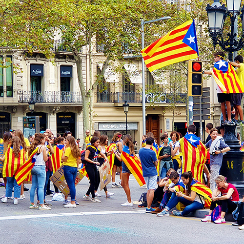

A little bit about me
Hello! My name is Vladimir and I live in San Francisco California. What if every day was and adventure? If that question sparks any wonder of possibilities, we’ll let one of those possibilities be travel. Traveling is fun! It makes your life richer and fuller of experiences. I enjoy doing it because I learn a lot about geography, politics, people, cultures, nature and food. Not only is learning part of the experience and adventure, but you also experience different flavors of food and get to have friends all over the world! You are exposed to all sorts of environments and sometimes you will feel completely out of place, but don't worry its really fun! You feel alive, present and have that kid wonder in you. Aside from all, traveling around the world alone helps develop interdisciplinary skills. And to top it all off, traveling gives the opportunity and possibility of networking around the world!
Tips on Travel
Here are a few guide lines on how to travel safely and cheaply. The first thing to do is a lot of research. Research the country and region that you will visit. Consider the weather. Make sure you check the weather before you go. Don't show up packed with summer clothes and its snowing. Its good to know how the weather is going to be. If you decide to travel extensively for months try to go to places with similar climates. I personally prefer warm and hot climates. It is also a good idea to travel light. Preferably a backpack that you can carry on the plane. I traveled around the world with a 5kg (approx. 11 lbs.) backpack. Another important thing to bring on your trip is a smartphone. Technology today makes traveling much easier. Do you guys remember the days when we were using maps? Make sure that your smartphone is unlocked or jailbroken otherwise it probably won't work in different parts of the world. Download the following apps and create accounts to have options while traveling! I suggest setting up your accounts in advance before leaving on the trip.
Helpful Travel Apps
- Oanda Currency Converter
- Skype
- Venmo
- Lyft
- Uber
- Agoda
- Booking
- Airbnb
- Hostelworld
- Couchsurfing
- TripAdvisor
- KAYAK
- Skyscanner
- Google Maps
All of these apps are going to help with research, communication, finance, accommodations and much more. The following sites are helpful if you are looking for work while traveling anywhere in the world! If you have the opportunity to travel and explore different countries around the world, please take the opportunity you will not regret it!
Additional Tips and Other Online Resources
Another important thing to bring along is an international driving permit. Having it will allow driving different types of motor vehicles like cars, bikes and scooters. You can pick up an international driving permit at a AAA office. You will have to fill out an application and provide two passport photos. Passport photos can be taken at Walgreens. Take a look at the following article it is a great read that provides lots of good information about earning money while traveling. 40 Best Travel Jobs To Make Money Traveling The World Another great site worth checking out is Workaway It will provide great opportunities of working and exploring different parts of the world. Another similar site is WWOOF It is about living and learning about organic farming all over the world. helpx is yet another similar site that will help you find work and accommodations while you travel. Lastly this article provides ways to travel the world cheap or in some cases free. 20 WAYS TO TRAVEL AROUND THE WORLD FOR CHEAP OR EVEN FREE In the end the more you travel the more memories you will create and cherish that will last a lifetime!
Personal Travel Images



Related travel images
The following images are from Pexels its is a great site that provides images labeled for reuse.